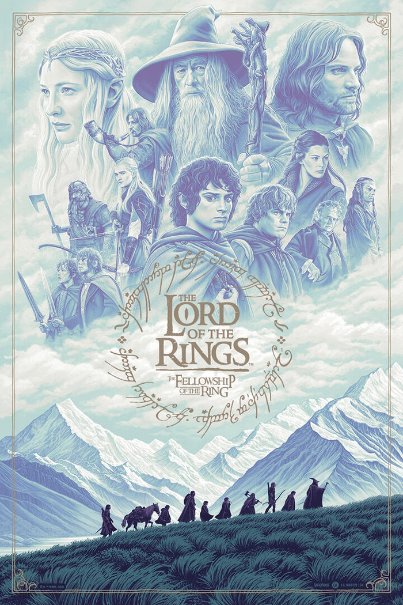
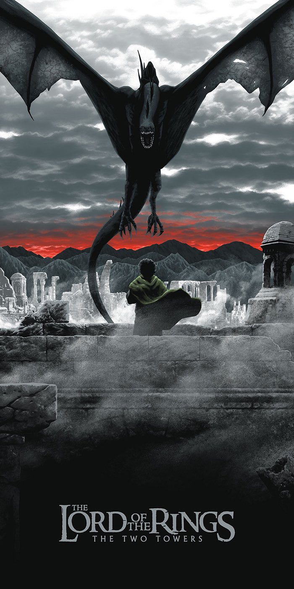
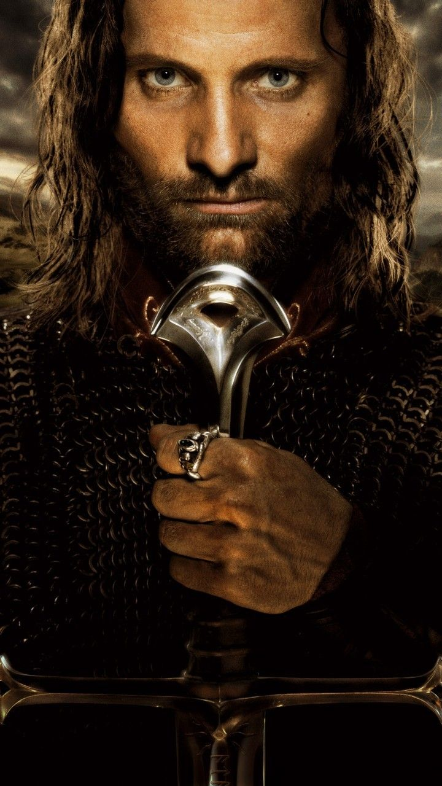

Спокійний світ гобітів опиняється під загрозою, коли Фродо дізнається страшну таємницю звичайного на вигляд персня. Щоб урятувати Середзем'я від темряви, він вирушає в небезпечну подорож, де зустрічає вірних друзів, давнє зло та випробування, які змінять його назавжди.

Братство розпалося, але боротьба за майбутнє Середзем'я лише набирає обертів. Поки Фродо та Сем пробираються до серця ворожих земель, їхні друзі стають на захист королівств людей. Темрява поширюється, давні сили пробуджуються, а надія залежить від мужності тих, хто не готовий здатися.

Вирішальна битва за долю Середзем'я наближається. Арагорн має прийняти своє призначення, щоб об'єднати людей у боротьбі проти Саурона. Тим часом Фродо й Сем намагаються дістатися до Рокової гори та знищити Перстень раз і назавжди.